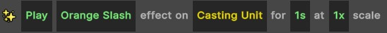

Visual Effects
When designing your game, it is likely that you will need to use a variety of visual effects for the player abilities, monster abilities, items, and general game logic.
The project comes with a variety of visual effects included, but it is likely that you will also want to add some of your own. You can find all of the example visual effects in the Assets to Use > Effects folder in the project.
Contents
Creating a Visual Effect
To create a visual effect, create a new GameObject or select an existing one. Add a Custom Visual Effect component to it. When you are choosing visual effects in the visual coding system, only GameObjects which have this component will be populated into the list.
Next, if you want the effect to be stored in a particular category (e.g., you may have a category for explosions, a category for glows, etc) enter the name of the category in the Sub Group slot.
Finally, if you don’t want the effect to appear in the list (e.g., it may be a template prefab which other prefabs use), you can enable the Is Template property in the Custom Visual Effect script.
Spawning Visual Effects
To spawn a visual effect, use either the Feedback > Play Visual Effect on Unit or the Feedback > Play Visual Effect at Point action.

If you choose to play the effect on a unit, the effect will follow the unit around. This is useful if you want the effect to move with the unit. For example, if the unit has a buff, you want the buff visual to be attached to the unit.
If you spawn an effect on a unit, you can also choose to Play or Refresh the effect rather than playing it as normal. This ensures that you don’t spawn multiple copies of the effect if they aren’t required.
Do I need to use the Custom Visual Effect component?
You do not need to use the custom visual effect component. It doesn’t add any functionality, and instead just makes it easier for the visual scripting tool to find visual effects in the project. If you are writing C# code, you can just
Instantiateeffects as you normally would.